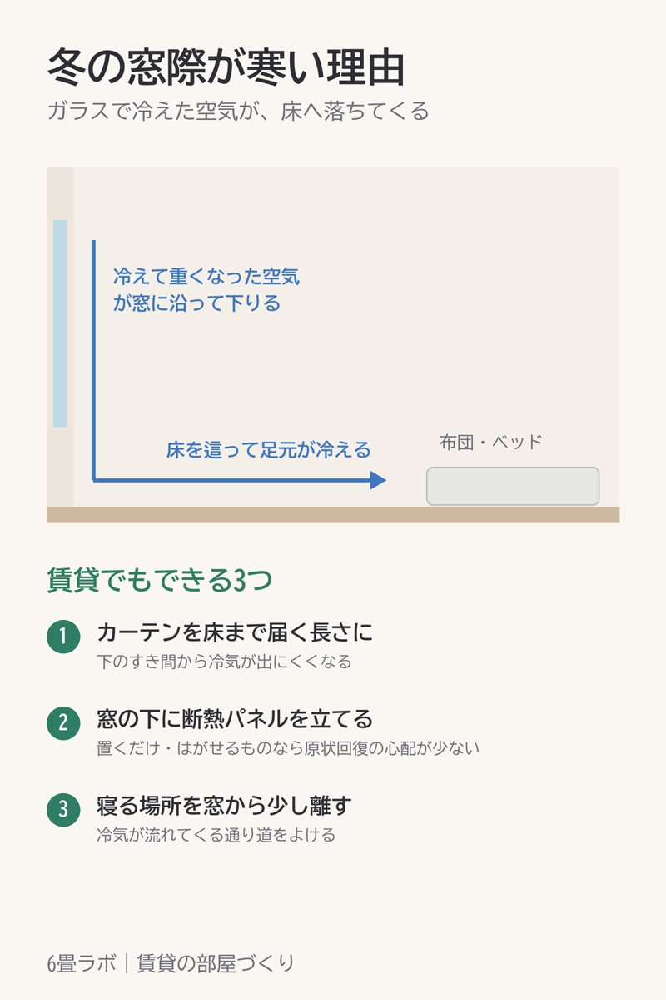

冬の窓際が寒い理由と、賃貸でもできる3つの対策
このページには楽天アフィリエイトのリンク(【PR】)が含まれています。

冬、窓の近くにいると足元がすうっと冷えます。これは、窓のガラスで冷やされた空気が重くなり、窓に沿って下へ落ち、床を伝って部屋に広がるからです。
賃貸でもできる3つ
- カーテンを床まで届く長さにする。下のすき間から冷気が出にくくなります。
- 窓の下に断熱パネルを立てる。置くだけのものや、はがせるものなら原状回復の心配が少ないです。
- 寝る場所を窓から少し離す。冷気が流れてくる通り道をよけられます。
6畳の部屋は窓とベッドが近くなりがちです。家具の配置を考えるときに、窓からの距離も入れておくと冬が楽になります。
【PR】6畳の冬支度(毛布・布団・ラグ)をまとめた楽天ROOM楽天で見る →
ほかの図